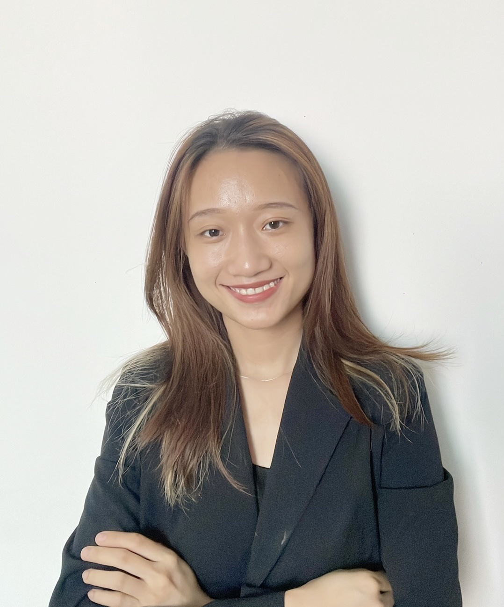

이력서
Bùi Thị Hồng Ngọc

학력 사항
- 다낭 외국어 대학교-한국어 학과 (2017~2021)
경력 사항
- SinAsean Vietnam Co., LTD - 대리 (2023/06~2023/10)
- 베트남으로 진출하고 싶은 한국 기업 지원
- 베트남및다른나라의 시장환경조사(다양한분야: 콘텐츠, 기술 Trend 등)
- 수출상담회,무역사절단등지원 (공항픽업,기업인솔등)
- LG Display Viet Nam Hai Phong (2021/03~2023/06) - 통-번역사
- 공정/기술/설비/UI 관련 통-번역. (미팅 통역, 대화 통역, 기술자료 번역 등)
- 한국파견근무 (2개월, 설비 검수 지원)
- 한국주재 회사에서의 실무 경험. (한국인의 사고방식/일하는 스타일 등에 익숙함)
- 통-번역외팀관리업무경험 (비용처리, 인원관리, Project Schedule 관리등)
- Daitin & Associates Co., LTD - 번역사 (2021/06~2022/11)
- Vietnam - Korea University of Information and Communication Technology - 한국어 강사 (2019/08~2019/12)
관련 교육 및 활동
- JCI 국제 썸머 키즈 캠프 - 2019/06
- 봉사자(통역) - (행사 참석 한국 어린이 대상 통역 및 행사 지원)
- 중앙대학교 베트남 해외봉사단 - 2020/01
- 봉사자(통역) - 현지 어린이 (초등학생) 대상으로 교육 진행 시 번역/통역
- Dak-pring의 따뜻한 겨울 봉사단 - 2017/12
- 봉사자-산골 마을인 Dak-pring 마을에서 봉사활동에 참여
- 다낭 SOS어린이마을 - 2017/09~2018/01
- 봉사자(영어 강사)-SOS어린이마을에 있는 어린이들에게 영어 교육
수상 경력
- 롯데 장학재단 : 한국어 전공 우수 학생을 위한 롯데장학금 (2020/03)
- Pham Van Dong장학재단 : Quang Ngai성 출신 우수 학생을 위한 장학금 (2021/01)
자격 사항
개인 능력
- 영어: 기본 소통 가능
- 한국 회사 문화 이해
- MS Office (PPT, Excel, Word) 활용 능력 우수